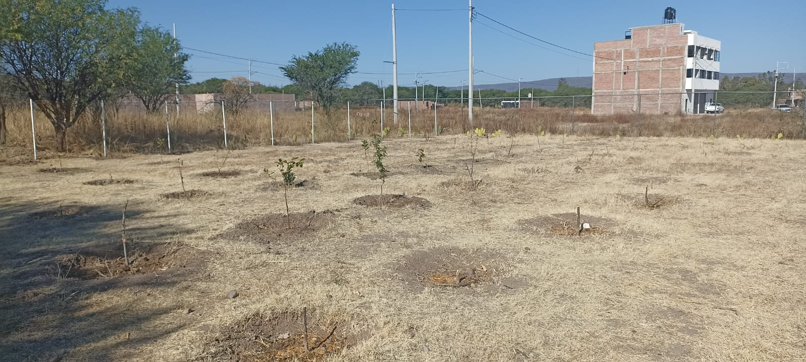
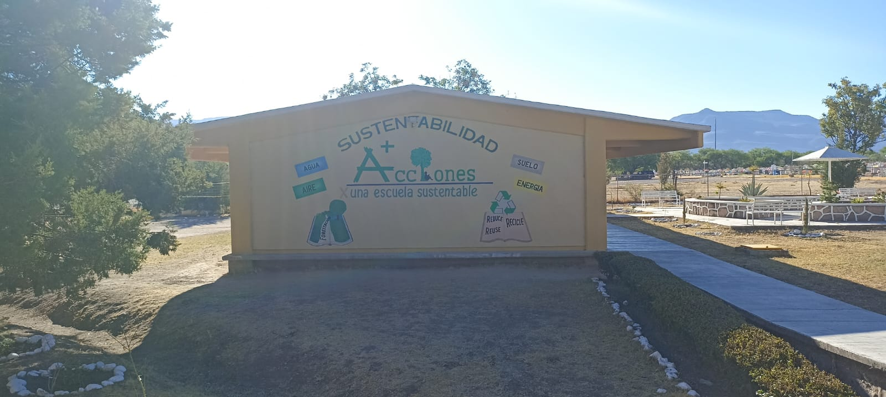

Musica Prehispanica
Integrando educación ambiental y prácticas sostenibles en toda la comunidad escolar
Nuestro Programa
El Colegio de Estudios Científicos y Tecnológicos de Zacatecas (CECyTEZ), como parte del subsistema CECyTE nacional, implementa un programa integral de sustentabilidad orientado a integrar la educación ambiental y prácticas sostenibles en toda la comunidad escolar.
Los objetivos generales, alineados con el Programa de Educación para el Desarrollo Sustentable (PEDS) adoptado en el subsistema, son formar ciudadanos críticos y proactivos que valoren su entorno social y natural. Esto implica promover conciencia ecológica, responsabilidad social y uso racional de recursos, tanto en el currículo como en la gestión cotidiana de los planteles.
Iniciativas Implementadas
Nuestras acciones concretas en los planteles de CECyTEZ abarcan múltiples áreas estratégicas para crear un entorno educativo sostenible:
Manejo de Residuos y Reciclaje
Implementamos campañas de separación de basura (papel, PET, electrónicos) y programas escolares de reciclaje. Participamos activamente en la campaña nacional "Limpiemos Nuestro México", organizando recolección de basura en calles y parques cercanos a nuestros planteles.
Eficiencia Energética
Impulsamos el ahorro de energía mediante la renovación de iluminación (LED) y proyectos de energía limpia. Estamos gestionando apoyos para la instalación de paneles solares en planteles con el objetivo de reducir costos de electricidad y fomentar la sustentabilidad educativa.
Cuidado del Agua
Hemos instalado bebederos y difundimos campañas de ahorro de agua entre alumnos y personal. Además, reorganizamos espacios verdes de manera que requieran menor riego, promoviendo un uso responsable de este recurso vital.
Áreas Verdes y Reforestación
Fomentamos la creación y mantenimiento de espacios verdes en los planteles. Organizamos siembras de árboles de ornato y frutales en el campus y zonas aledañas, buscando reforestar hasta el 50% de áreas escolares.
Educación y Cultura Ambiental
Integramos la sustentabilidad en el currículo y en actividades extracurriculares. Ofrecemos talleres, pláticas y ferias ecológicas para estudiantes y docentes, formando "brigadas verdes" estudiantiles que participan en la Red Juvenil para la Sustentabilidad.
Huertos Escolares
Desarrollamos huertos escolares (jardines comestibles) para integrar prácticas agrícolas básicas y enseñar sobre alimentación sostenible, permitiendo a los estudiantes conectar con la naturaleza y comprender ciclos productivos.
Proyectos Estudiantiles Destacados
Los estudiantes de CECyTEZ participan activamente en concursos y proyectos tecnológicos de alcance estatal y nacional con enfoque ambiental. Uno de los escenarios más notables es el Concurso Nacional de Creatividad e Innovación Tecnológica de los Cecyte, cuya XXIII edición en 2024 se llevó a cabo en Zacatecas.
Algunos proyectos innovadores incluyen:
- Sistemas de recolección y aprovechamiento de agua de lluvia
- Jardines botánicos escolares con especies nativas
- Propuestas de reciclaje de residuos orgánicos en gastronomía
- Desarrollo de prototipos de energía renovable
- Sistemas de monitoreo ambiental con tecnología desarrollada por estudiantes

Certificaciones y Reconocimientos
A nivel nacional, varios subsistemas CECyTE han recibido premios ambientales por sus iniciativas sustentables. En Zacatecas, aunque aún no contamos con un reconocimiento ecológico específico, CECyTEZ ha conseguido logros importantes en otras áreas:
- En 2023 el plantel Lázaro Cárdenas obtuvo la primera certificación como Escuela Promotora de la Salud a nivel media superior en Zacatecas
- Participación activa en programas federales de sustentabilidad
- Reconocimientos por proyectos estudiantiles en concursos nacionales
Actualmente, la dirección general del Colegio ha instado a todos los planteles a cumplir los estándares ambientales inscritos en los convenios con dependencias (como la Secretaría del Agua y Medio Ambiente de Zacatecas) y a perseguir reconocimientos por su cumplimiento.
Participación en Campañas Nacionales
CECyTEZ se suma a campañas impulsadas por el gobierno federal y estatal para reforzar su programa de sustentabilidad:
"Limpiemos Nuestro México"
Participamos activamente en esta campaña organizada anualmente por SEMARNAT, llevando brigadas estudiantiles a limpiar áreas públicas de nuestras comunidades.
"Está en tus manos: la basura a su lugar"
Nos unimos a esta iniciativa federal para promover la correcta disposición de residuos y concientizar sobre la importancia de mantener limpios nuestros espacios.
"Jornadas por el Agua"
Aprovechamos esta convocatoria para reforzar nuestras acciones de conservación del agua, educando a nuestra comunidad sobre su importancia y correcto aprovechamiento.